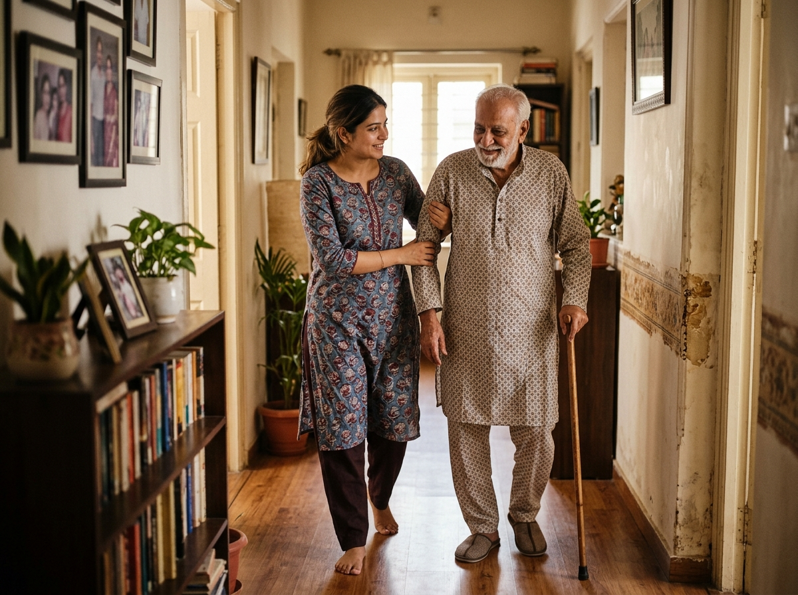

Care and Support in the Comfort of Home
Recovering from an illness, managing reduced mobility, or navigating the physical challenges of aging often requires thoughtful in-home support. Arovia provides two distinct categories of home care: compassionate caregivers who assist with everyday physical routines and personal dignity, and qualified registered nurses who deliver skilled clinical care and medical monitoring in accordance with physician guidance.

Caregiver Services
Non-clinical assistance with bathing, personal grooming, safe mobility, meal support, daily routines, and friendly companionship at home.
Explore Caregiver Support ↓Registered Nursing
Professional clinical care at home: physician-prescribed injections, sterile wound dressing, vital signs monitoring, and catheter management.
Explore Clinical Nursing ↓Caregivers — Practical Help With Everyday Living
A caregiver (often referred to as a patient attendant or home care aide) is a compassionate, trained individual who assists patients with activities of daily living (ADLs). Caregiving focuses on personal care, safety, comfort, and routine physical support rather than medical diagnosis or clinical treatments.
Who Benefits From Caregiver Support? Older adults experiencing age-related physical frailty or memory difficulties, individuals recovering from surgery who temporarily lack the stamina to manage alone, and patients living with chronic mobility impairments all benefit greatly from having an attentive caregiver by their side. It is not treatment for the medical conditions of ageing.
Why Routine Activities Become Challenging: Natural declines in muscle tone, joint stiffness, reduced balance, sensory impairment, and fatigue can turn simple everyday tasks into frustrating or risky hurdles. Dedicated caregiver assistance removes the fear of falling, relieves burden on family members, and enables patients to remain comfortably in familiar home surroundings.

How Caregivers Support Daily Life
Caregiving is not merely a checklist of chores; it is thoughtful, respectful assistance designed to protect patient dignity, independence, and peace of mind. Here is what our caregiver support involves in practical terms:
Bathing and personal hygiene
Caregivers assist with sponge baths, assisted showering, washing hair, and dental care while strictly protecting personal privacy and warmth. Maintaining personal hygiene prevents skin irritation and infections while helping patients feel fresh, respected, and comfortable.
Personal grooming and dressing
Caregivers provide patient support with choosing clean, comfortable clothing, fastening buttons, putting on socks and footwear, hair brushing, and nail care. Dressing neatly each day fosters self-esteem and maintains a reassuring sense of daily purpose.
Mobility assistance and everyday routines
Helping individuals move safely between their bed, chair, and dining table, steadying their balance while walking, and assisting with comfortable repositioning. Gentle mobility support prevents painful bedsores and reduces the risk of dangerous falls.
Meal assistance and feeding support
Caregivers help serve nutritious meals at regular times, encourage proper fluid intake, and provide gentle, patient feeding assistance when tremors, physical weakness, or recovery makes handling cutlery difficult.
Companionship and emotional reassurance
Social isolation and loneliness can significantly affect emotional and physical health. Caregivers offer warm, attentive companionship, engaging in conversation, listening patiently to stories, and creating a safe, calm presence at home.
Medication reminders (Non-Clinical)
Caregivers give timely reminders to take prescribed tablets according to the schedule set by the patient's doctor. Important medical boundary: Reminders are strictly intended to support patient adherence. Caregivers cannot independently prescribe, adjust dosages, or administer injections.
Caregiver Support in Common Situations
The same personal-care tasks apply in the situations below. What changes is the limit of that help. Whether support can be arranged is confirmed when you call.
Bedridden patients
A caregiver may help with washing in bed, changing position, using a bedpan or urinal, and moving between bed and chair when that transfer is safe. Pressure-sore treatment and other wound care stay with a nurse.
Recovering from stroke
A caregiver is not a stroke therapist. Any exercise or swallowing advice must come from the treating doctor and, where needed, a qualified nurse or therapist.
Daily support with dementia or Parkinson's
A caregiver may help keep a familiar routine through the day. This does not include clinical treatment of dementia or Parkinson's, or changing medicines.
Dignity, patience, and confidentiality form the cornerstone of quality caregiving. Caregivers understand that accepting personal help can feel vulnerable, and they approach every task with empathy and respect. However, caregivers provide non-clinical support only. They are not licensed nurses and do not perform clinical assessments, wound debridement, catheterization, or medical injections. When clinical nursing care is required, a registered nurse must be engaged.
Need Caregiver Assistance for a Loved One?
Call Arovia to discuss your family's daily routine, patient condition, and caregiver availability.
Registered Nurses — Skilled Clinical Care at Home
Registered nurses (RNs) are formal clinical healthcare professionals who have completed accredited nursing education and maintain professional clinical licensing. Nursing care involves clinical judgment, technical medical skills, aseptic procedures, and the management of doctor-prescribed therapies.
How Nursing Care Differs From Caregiving: While caregivers support general daily routines, registered nurses focus on the clinical treatment plan. They perform sterile dressing changes, administer intravenous and intramuscular medications, assess physiological parameters, and recognize subtle warning signs of medical deterioration.
When In-Home Nursing Is Appropriate: Professional home nursing is indicated for patients recovering from major surgeries, individuals requiring ongoing intravenous antibiotic or hydration therapy, patients with complex non-healing wounds, and individuals transitioning home from intensive care or post-acute hospital wards.
Clinical Services Provided by Registered Nurses
All clinical nursing interventions are delivered under treating physician authorization and strict infection-control standards:
Physician-prescribed injections
Administration of intravenous (IV), intramuscular (IM), and subcutaneous (SC) medications strictly in accordance with written medical prescriptions. Nurses follow aseptic techniques, check medication expiry and dosage, and monitor the patient for allergic reactions.
Wound care and sterile dressing changes
Clinical assessment of surgical incisions, pressure ulcers (bedsores), and chronic wounds. Nurses perform sterile cleansing, surgical suture and staple care, application of medicated dressings, and documentation of tissue healing stages.
Nursing assessments and clinical monitoring
Systematic recording of baseline vital signs: blood pressure, heart rate, blood oxygen saturation (SpO2), body temperature, and capillary blood sugar. Nurses maintain accurate clinical observation charts and promptly notify the treating doctor of any clinical changes.
Infusion therapies & treatment support
Cannula maintenance, saline and electrolyte infusion setups, management of medical nebulization sessions, and clinical oversight of supplemental oxygen support within the approved home nursing scope.
Catheter, tube & line management
Foley urinary catheter maintenance and hygiene, nasogastric (Ryle's) feeding tube management, and routine care of clinical recovery lines, ensuring proper positioning, patency, and strict infection control.
Adherence to treating physician instructions
Home nursing is carried out as an extension of the primary doctor's medical orders. Registered nurses do not alter treatment protocols or introduce new therapies independently; they coordinate closely with the clinician to ensure continuous, safe care.
When Nursing Care May Be Discussed
These are situations families often raise with the home care desk. A nurse works from the treating doctor's instructions. Arovia can help you explore whether suitable nursing support can be discussed. That is not a statement that Arovia employs the nurse, or that every procedure is available in every place. Sudden or life-threatening illness needs emergency medical care, not a home-care enquiry.
General nursing and health monitoring
Which checks are done, and how often, has to be agreed before care starts. Personal care from a caregiver is not a substitute for clinical observation.
Prescribed medicines the person cannot take alone
A nurse may give a prescribed medicine the person cannot take independently. Reminder-only support stays with a caregiver.
Catheter and feeding-tube care
This can be discussed when the treating team has said that the care may continue at home and a nurse who can do it is available.
Respiratory support and more complex needs
Nebulisation or oxygen already prescribed by a doctor may be discussed if a suitably qualified nurse and a suitable home setup are available. Care that depends on intensive-care equipment, such as a ventilator, is not promised on this page. Ask the treating doctor whether home is appropriate before you enquire.
Need Clinical Nursing Care at Home?
Call Arovia to discuss your patient's clinical requirements, medical prescriptions, and nurse availability.
Caregivers vs. Registered Nurses: Choosing the Right Care
Selecting between a caregiver and a registered nurse depends on whether the patient requires non-clinical assistance with daily physical tasks or formal medical procedures supervised by a clinician. Review the breakdown below to guide your decision:
| Aspect of Care | Caregivers (Attendants) | Registered Nurses |
|---|---|---|
| Primary Objective | Support with activities of daily living (ADLs), comfort, and physical safety | Clinical healthcare delivery, vital signs assessment, and treatment administration |
| Professional Qualifications | Trained non-clinical personal care attendant | Formally educated, clinically licensed nursing professional |
| Dressing & grooming assistance | ✓ Yes — Routine core activity | Secondary to clinical care when needed |
| Bathing & hygiene assistance | ✓ Yes — Routine core activity | Secondary to clinical care when needed |
| Meal feeding & mobility support | ✓ Yes — Core daily assistance | As appropriate during clinical shift |
| Medication Reminders | ✓ Yes — Scheduled adherence prompts only | Administers and logs prescribed drugs |
| Injections (IV, IM, SC) | ✕ No — Strictly outside scope | ✓ Yes — Under physician authorization |
| Wound Care & Sterile Dressings | ✕ No — Strictly outside scope | ✓ Yes — Post-surgical & ulcer care |
| Catheters, Feeding Tubes & Lines | ✕ No — Strictly outside scope | ✓ Yes — Managed with sterile technique |
| Clinical Monitoring & Observation | ✕ No clinical diagnostic interpretation | ✓ Yes — Systematic vital signs & doctor logs |
What Is Included in Home Care?
The tasks and responsibilities for a particular arrangement have to be agreed before support starts. This page does not set that list. Personal care and clinical procedures are set out above. Household work is a separate question.
Household chores
Cooking, cleaning the house, and laundry are not personal care and they are not nursing. Do not assume they are included. If you want them discussed, say so when you call.
Planning the Right Care Arrangement
Call the home care desk with what you already know. Arovia can help you explore suitable care options. The points below are questions to settle on that call. They are not packages, prices, schedules, or a guarantee that staff will be available.
Duration and time of day
Say whether help is needed for a few days, for a longer recovery, or on an open-ended basis, and whether that is daytime, overnight, or both. What can actually be arranged is confirmed when you call.
Qualifications, availability, and responsibilities
Ask what training applies to the person being discussed, which tasks they will do, and which stay with the family or the doctor. A match may not be free for every place or start date.
Cost
Charges are not listed on this page. They depend on the arrangement you discuss and are explained on the call before you decide.
How to Choose the Right Support
The comparison above is the guide for stable daily help versus clinical procedures. Use this when you are unsure whether to call the home care desk or the treating doctor first.
Ask the treating doctor
New confusion, trouble breathing, a fall with injury, bleeding, chest pain, or any sudden worsening should go to the doctor or to emergency services. After the doctor has said what is needed at home, call Arovia to see whether caregiver support, nursing, or both can be explored.
Frequently Asked Questions About Home Care
Answers to common questions families ask when considering in-home caregiving and nursing support.
Can our family enquire if we are unsure which service is right?
Yes. You can call Arovia's desk directly. Our coordinator will listen to your patient's routine, ask about any doctor instructions, and help clarify whether caregiver support or registered nursing matches your situation.
What information should I have ready when calling about home care?
It is helpful to describe the patient's approximate age, primary condition or recent surgery, current mobility level (e.g. bedridden, using a walker, or walking with assistance), whether help is needed for a few tasks or for most personal care, whether a doctor has prescribed nursing procedures, and your location in Guntur.
Unsure Whether You Need a Caregiver or a Registered Nurse?
Call our home care coordinator directly. Describe your patient's day-to-day routine and medical recommendations, and we will help you identify the most appropriate care arrangement.